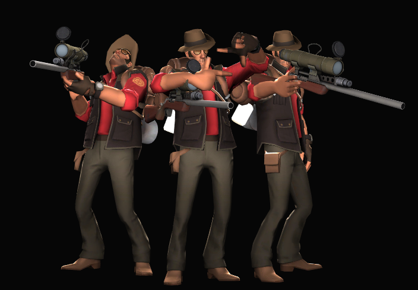

Основные проблемы которые мешают игре
У всех играх есть проблемы, Тим Фортрес так-же имеет свои проблемы, которые мешают игре. Сейчас я розкажу про самые разпространеные проблемы в Тим Фортрес
1.Боты - это самая распространеная проблема серверов в Тим Фортрес. Обьясню почему, (информация взята из личного мнения) некоторые игроки терпеливо ждут обновления, но разработчики никак его не выпускают, и тут игроки которые ждут обновления начинают так скажем бунтовать. Они совмещают ИИ турели и Снайпера, и эти боты потом идут на сервера, тем самым мешая играть другим. Они делают это для того чтобы разработчики их заметили и выпустили обновления
2. Пинг в СНГ комюнити - сервера в Тим Фортресе находяться в основном на територии НАТО, и чем дальше сервер, тем больше пинг, НАТО находить довольно далеко от СНГ, и из-за этого пинг в среднем 70-120 (норма это 15-20). Самый ближайщий сервер, это Люксембург, и то пинг достигает 30-45.
3. Читеры - это проблема касающейсяя любой онлайн игры, в том числе и Тим Фортрес. Я не понимаю логику людей которые играют с читами, они просто веселяться и портят игры другим. Разработчики пытались с этим бороться создав Valve Anti Cheat - VAC, но он работает не очень, и читери этим пользуються.